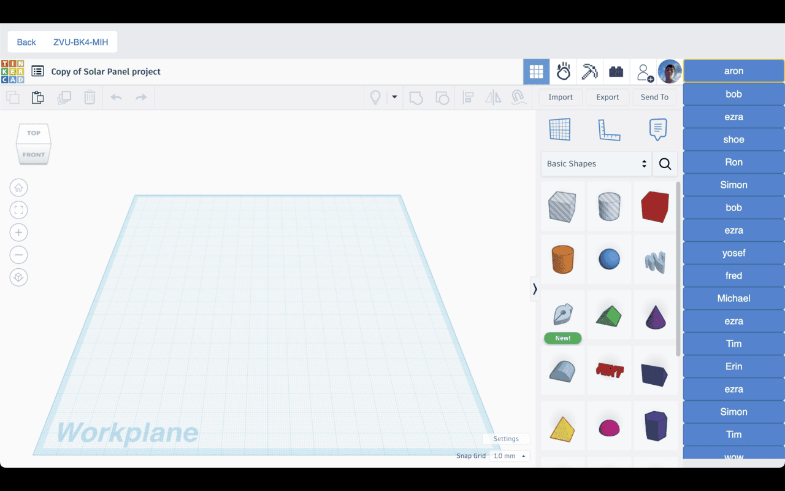
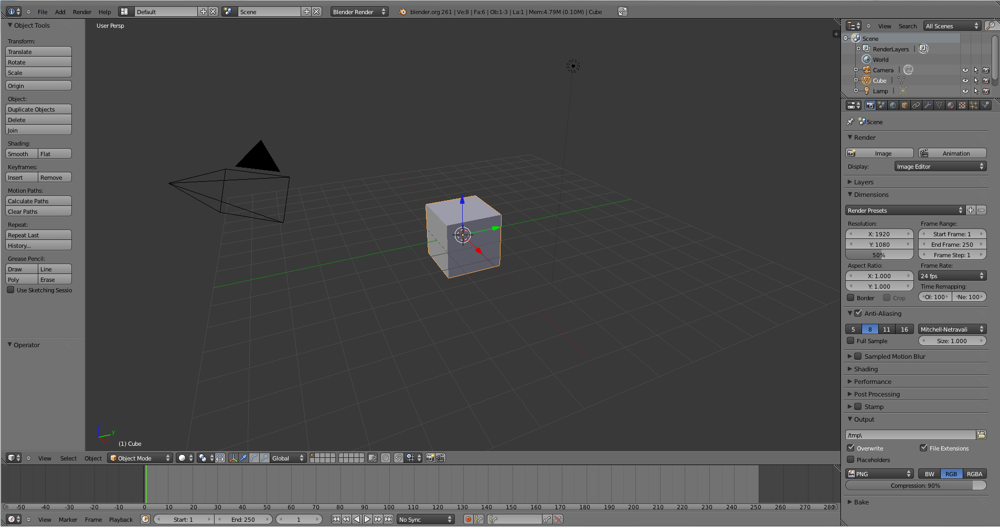
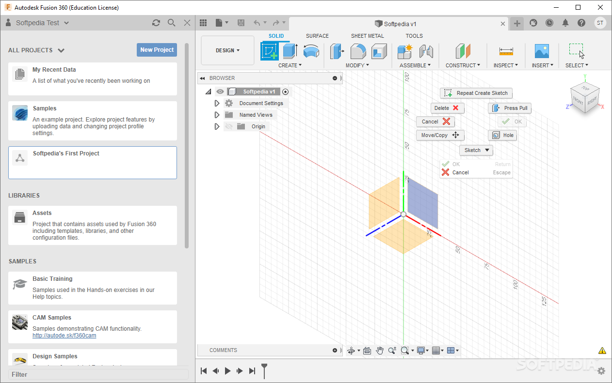
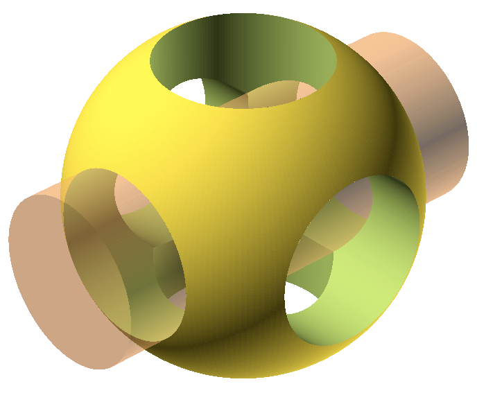
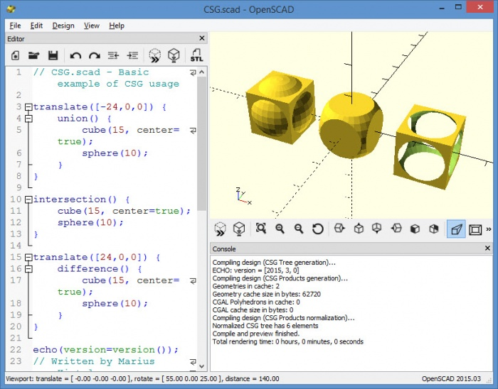
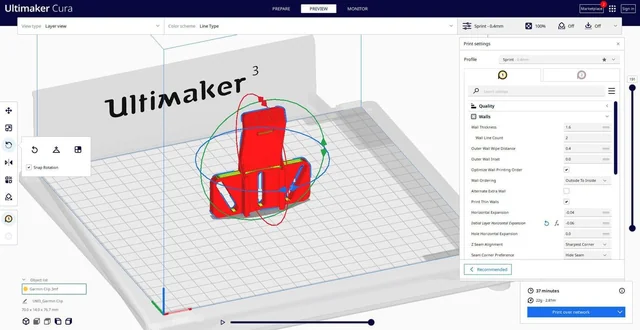
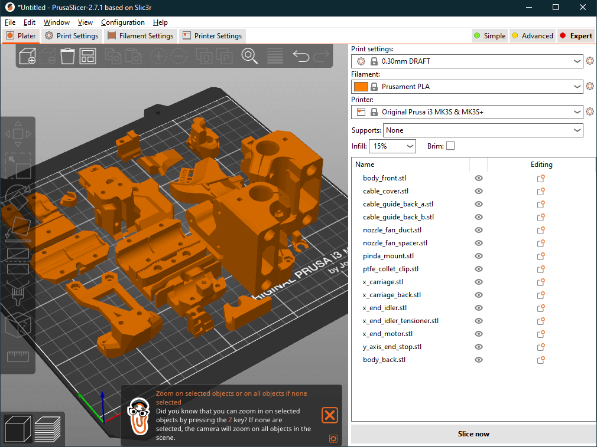
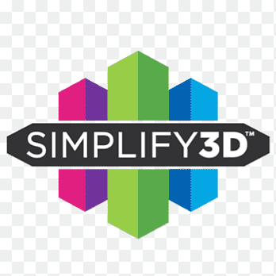
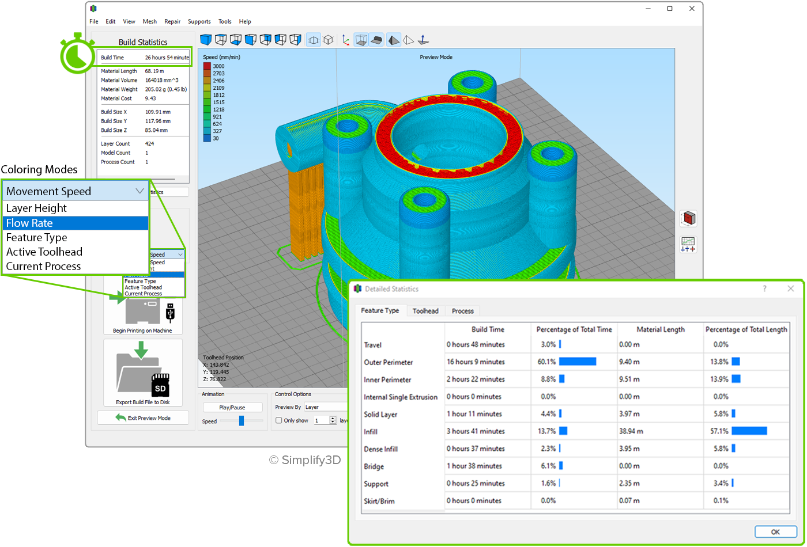
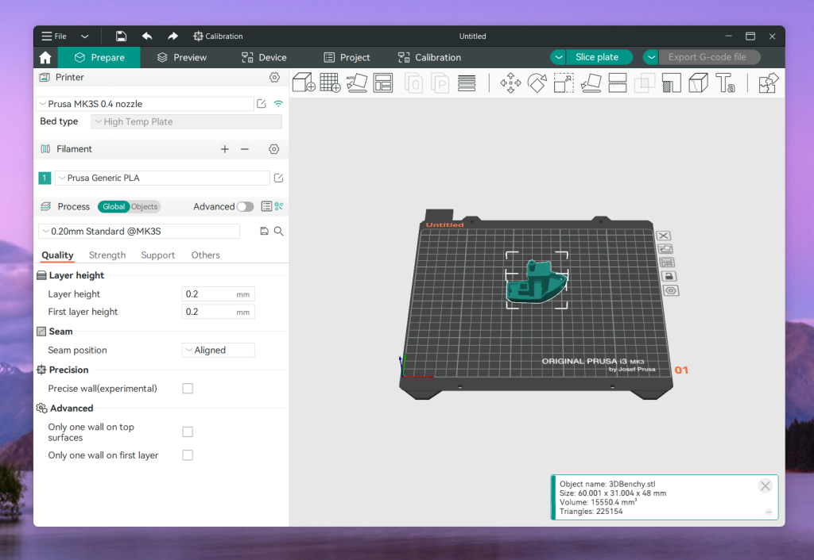

Tinkercad
A free, beginner-friendly browser-based 3D modeling tool. Perfect for simple designs and learning the basics of 3D modeling with its intuitive drag-and-drop interface.

A free, beginner-friendly browser-based 3D modeling tool. Perfect for simple designs and learning the basics of 3D modeling with its intuitive drag-and-drop interface.

A powerful, free, open-source 3D creation suite. Ideal for advanced modeling, sculpting, and animation. Has a steep learning curve but offers professional-grade capabilities.

Professional CAD software for parametric modeling. Excellent for mechanical parts and functional designs with precise measurements and engineering features.


A script-based 3D modeler for programmers. Create models using code rather than a graphical interface, perfect for parametric designs and generating variations.

Free slicing software by Ultimaker. User-friendly with extensive printer profiles and plugins. Great for beginners and experienced users alike.

Powerful open-source slicer from Prusa Research. Features advanced settings, custom supports, and excellent print quality. Works with any printer brand.


Premium paid slicer with advanced features and excellent support generation. Offers detailed control over every aspect of the print process.

Modern open-source slicer with advanced features and an intuitive interface. Built on PrusaSlicer with additional calibration tools and multi-color printing support.
